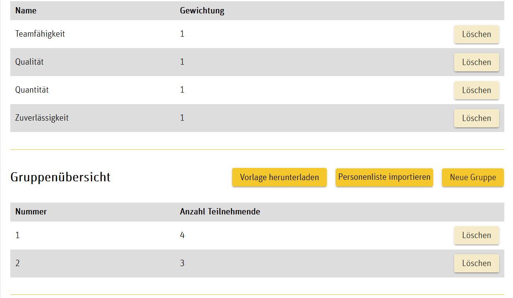
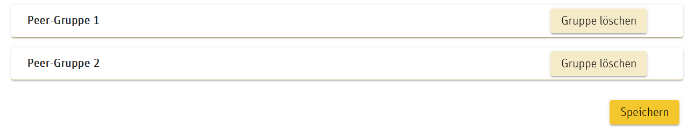
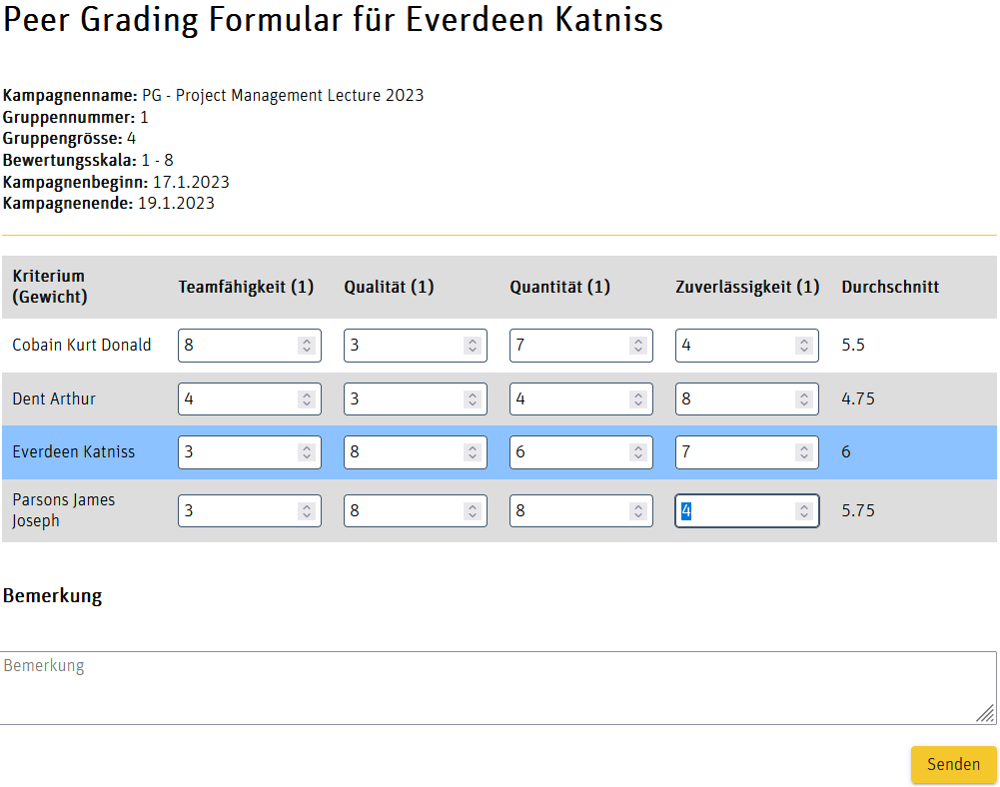
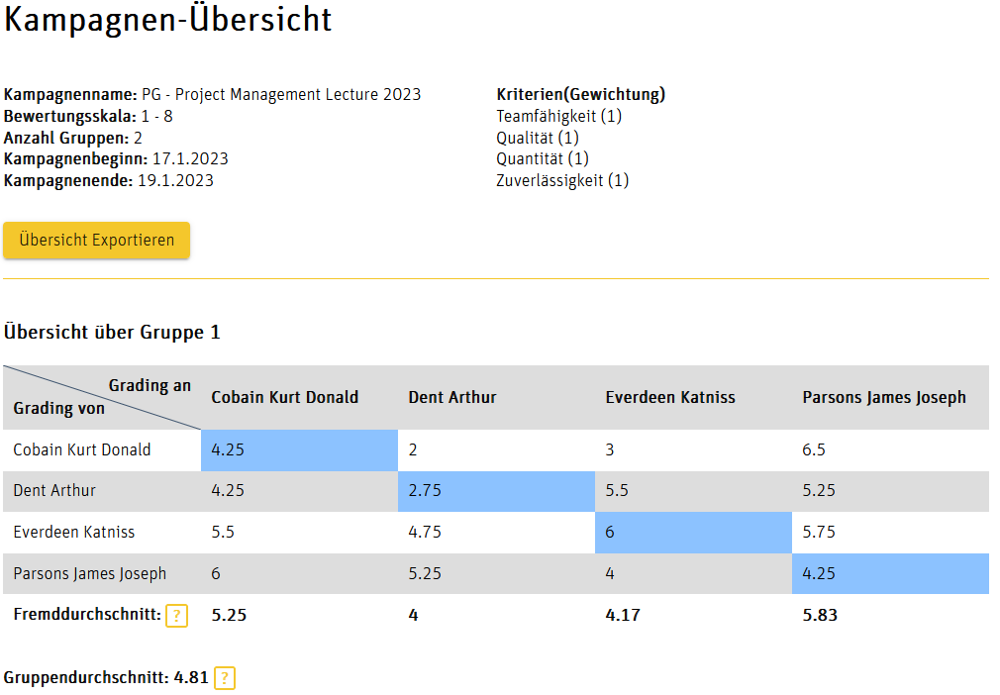
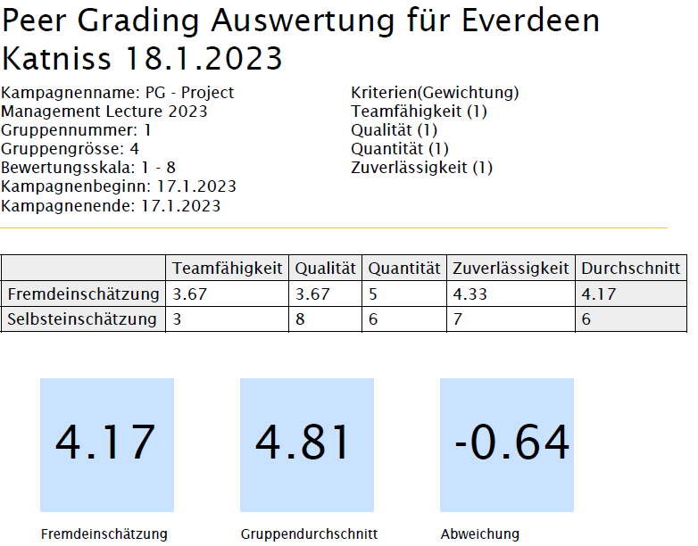

Peer Grading Tool PGT
Note for lecturers:
If you are interested in using PGT, please contact author (see below)
1 General
In group work, ideally all members contribute equally to the overall success of the project, but usually in individually different ways. Peer grading is used to evaluate individual contributions in group work ([Kaufman et.al. 1999], [Brutus & Donia 2010]), in our context the online tool PGT is used for this purpose. Each group member grades all other group members (peer grading) as well as himself/herself (self-grading) according to definable criteria and receives an evaluation in the form of an anonymized comparison. The evaluations are done with a point scale according to definable weighted criteria.
A lecturer (resp. teacher or instructor) can configure a peer grading process with regard to the number and designation of the criteria, their weighting and the point scale, as well as the start and end date for the period of the process. After the peer grading process, the lecturer receives a mail notification with all individual and group evaluations. This allows the lecturer to compare his assessment of the group contribution of individual group members with the peer evaluations.
Both the instructor and the participants can use their respective evaluations to reflect on the teaching and learning process and benefit from them for further group work.
2 Other Peer Grading Tools
Comparable peer grading tools are either only commercially available with a licensing model (e.g., CATME from Purdue University), or have limitations such as requiring participants to have a Google account (peer grading tool as a plugin for Google Spreadsheets), which does not go along with the idea of an open software system.
The Moodle activity "Mutual Assessment" is similar to the desired peer grading scenario. However, analysis has shown that essential aspects that are realized in the PGT tool regarding functionality, level of detail, flexibility and customization are not available. Thus, the PGT tool was implemented in December 2022 as an in-house development at the Dep. of Business of the Bern Univ. of Applied Sciences (BUAS) with Angular technology resulting in a web based application, funded by the
BFH E-Learning Förderprogramm.
3 Functionality
a) Creation of a peer grading process by the lecturer incl. import of participants in shape of a csv file with participant name, (unique!) matriculation number, email, and group number.


b) Each group member receives an email with a link to the individualized peer grading sheet and fills it out completely (input values are validated).

c) Upon completion of the peer grading process, all participants and the instructor receive evaluations via email.


In this example, the peer grading is based on 4 criteria with points 1..8. The documentation with the meaning of the criteria and the point scales is outside the PGT system and is to be made known to the participants by other means (see example for criteria catalog below). The evaluations of one's own contributions by other group members are anonymized to the extent that only the mean value of all third-party evaluations is given and thus exact conclusions about evaluating persons are not possible.
The group average is calculated by averaging all third-party assessments within a group. For each group member, the deviation between the group average and the average of the third-party assessments of the individual group member can be determined from this. In the evaluation section, the difference between self-assessment and third-party assessment is also shown, which enables critical reflection also with regard to future teamwork. The group average is calculated by averaging all third-party assessments within a group.
4 Criteria catalog
It is by decision not presented by the PGT system, since it is usually available as a semi-structured document and would have to be imported or entered in a time-consuming complex manner. Here is an example from the course Business Case Studies" (BCS) in the Department of Business at the Bern University of Applied Sciences. It is presented in the study guide of the course. The standard score for a "good" assessment is set at 5/6 points.
Kriterium "Teamfähigkeit":
8/7: aussergewöhnlicher Beitrag zum Gruppenprozess; „Macher/in“; bringt pro-aktiv Projektziele voran; ist äusserst engagiert; „opfert“ sich für Projekterfolg; leistet wesentlich mehr als erwartet; Meinungsbildner; hohe Kommunikationskompetenz.
6/5: engagiertes Mitglied, Beitrag nicht zu hoch, nicht zu niedrig; nimmt mit durchschnittlichem Verantwortungsbewusstsein am Gruppenprozess teil; hat integrierende Wirkung bei Konflikten.
4/3: liefert Beiträge auf Verlangen; neutrale Haltung zum Projekterfolg; nimmt bei „Durchhängern“ im Team keine motivierenden Vorstösse vor.
2/1: Unproduktive bis kontraproduktive Haltung; trägt nicht zum Gelingen des Projekts bei bzw. behindert/verhindert dessen Vorankommen. Destruktive Ausstrahlung
Kriterium "Qualität der Beiträge":
8/7: deutlich über der erwarteten Qualität.
6/5: entspricht der erwarteten Qualität.
4/3: weniger als die erwartete Qualität.
2/1: unzureichende Qualität.
Kriterium "Quantität der Beiträge":
8/7: deutlich über der erwarteten Quantität.
6/5: entspricht der erwarteten Quantität.
4/3: weniger als die erwartete Quantität.
2/1: unzureichende Quantität.
Kriterium "Zuverlässigkeit":
8/7: nimmt Termine ernst, bei Verhinderung bzw. Versäumnis aktive Suche nach Stellvertretung bzw. Alternativen; bietet Ersatz für Versäumtes; achtet auf Einhaltung des Gesamtplans, gibt ggf. korrigierende Impulse.
6/5: meist zuverlässig, passt sich allerdings eventuell schwankender Teamhaltung an; wenig ausgeprägtes Streben nach Pensenausgleich, falls (z.B. nach Abwesenheit) geringe Aufgabenzuteilung vorliegt; Hinweise auf eventuelle Defizite im Projekt werden ab und zu gegeben.
4/3: mehrfaches Fehlen bzw. Nicht-Erledigen von Aufgaben; keine oder verspätete Abmeldung; nur in seltenen Fällen sind Hinweise auf eventuelle Defizite im Projekt zu erwarten.
2/1: unzuverlässig, kaum mit erfolgskritischen Aufgaben beauftragbar; (fast) keine Kommunikation bei Ausfällen erkennbar.
Literature
-
Brutus, S., & Donia, M. (2010). Improving the effectiveness of students in groups with a centralized peer evaluation system. Academy of Management Learning and Education, 9(4), 652–662. https://journals.aom.org/doi/abs/10.5465/amle.9.4.zqr652
-
Kaufman, D. B., Felder, R. M., & Fuller, H. (1999). Peer ratings in cooperative learning teams. ASEE Annual Conference Proceedings, 3931–3942.
https://www.researchgate.net/publication/2450650_Peer_Ratings_in_Cooperative_Learning_Teams
Author: Eduard Klein / Jan 18, 2023